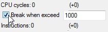

Содержание
Список брейкпоинтов сохраняется в одноименном файле .deb, который создается/обновляется после закрытия эмулятора.

Этот файл можно пересылать своим знакомым, которые могут помочь тебе с игрой, чтобы у тех также появился список необходимых брейкпоинтов.
Список брейкпоинтов считывается при первом открытии Debugger'а, если в нем стоит галочка DEB files внизу окна.
Если галочка не стоит, файл .deb не будет создаваться/обновляться после закрытия эмулятора.
Если в списке содержатся активные брейкпоинты, они не будут срабатывать даже при выполнении их условия в том случае, если после запуска эмулятора окно Debugger'а не было предварительно открыто вручную через эмулятор.